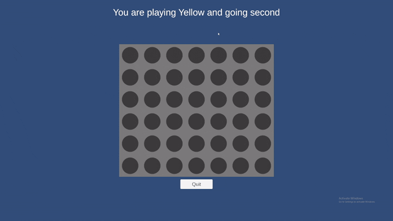
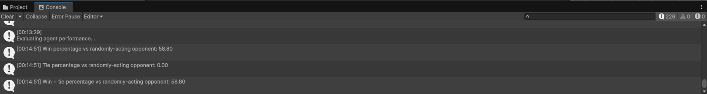

Fun Fact
The project features a full-scale release pipeline, triggered whenever a new version tag is pushed, which automatically builds the game, packages the build into an installer via Inno Setup, and publishes the installer file as both a GitHub release and a new itch.io update.
Overview
CoNNect-Four is first and foremost a project to test and showcase the functionality of my custom Neural Network Notions (NNN) framework within the context of Unity games. The opponent AI agent is fully trained using the functionality implemented in NNN. The game's graphics are not particularly flashy as the emphasis is primarily on the neural network functionality and the entire project is centered around using the Neural Network Notions framework in practice. Working on CoNNect-Four has proven instrumental in revealing bugs and shortcomings in the NNN framework itself while also serving as a showcase of the capabilities of the framework.


The opponent agent for the game is a neural network combining multiple convolutional and dense layers to process the entire board state. Training is done using the Deep-Q Learning (DQN) training and self-play functionality available in NNN and the same agent is trained to play both the red and yellow player. For the software design of the game itself, I decided to apply the principles I learned from reading Marc Gregoire's Professional C++ 6th Edition. This includes each of the distinct systems of CoNNect-Four being independent of the others. For instance, the internal game state and logic are handled completely separately from the rendering, input management, and so on. This approach also made it far easier to handle the training of neural networks without the need to explicitly disable rendering and other game systems.
Fun Fact
In order to make the training of neural network agents as simple as possible, the code adds additional functionality to the editor including buttons to initialize; load; start training; and stop training agents, with the training itself being performed via an asynchronous task to allow the editor to be used normally throughout the entire training process.